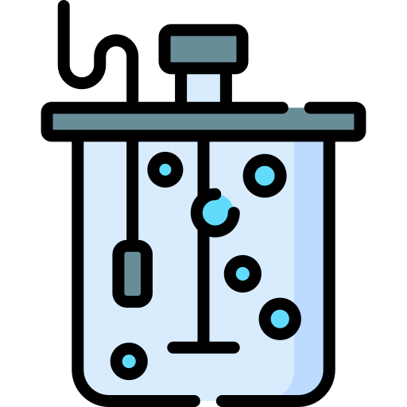
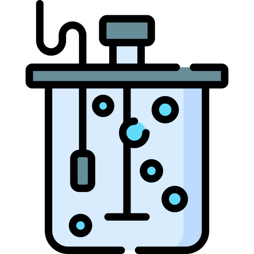

The fundamental requirement in modern technological environments consists of maintaining electrical and electronic products safe while preserving reliability and operational performance. Electrical Testing and Certification Labs provide advanced testing solutions, ensuring manufacturers and businesses achieve complete regulatory compliance. Our Electrical & Electronics Testing Services not only guarantee safety but also enhance innovation, reliability, and operational efficiency.

The safety foundation of market achievement depends on Electrical & Electronics Testing Services within modern technological environments. The material safety of electrical products relies on proper testing, as malfunctions can range from harmless minor issues to severe safety hazards. This makes testing essential not only for industry guidelines but also for life and asset protection.
Business competition and product safety benefits from manufacturers detecting product risks through advanced testing at our Electrical Testing and Labs before market launch. The test results help enhance product quality and compliance while encouraging product innovation.
Detailed evaluation procedures enable manufacturers to enhance product performance, maximize energy efficiency, and achieve significant long-term cost savings. Companies that adopt this proactive strategy not only meet regulatory compliance but also strengthen their market positioning.
Today's interconnected world has made electromagnetic compatibility an essential requirement because multiple operating electronic devices require designers to maintain seamless functionality without interference through Electrical & Electronics Testing, which serve critical industry requirements across different usage environments.
Our testing services function at the UK regulatory framework's cutting edge and provide uninterrupted international testing compatibility. By maintaining UKAS (United Kingdom Accreditation Service) accreditation, we demonstrate our absolute dedication to keeping our tests to the highest standard possible. Our organization strictly follows the Electrical Equipment (Safety) Regulations 2016 to evaluate electrical equipment safety at specified voltage levels.
Our organization operates within the BS EN Standards framework alongside continuous partnership with the Office for Product Safety and Standards in present regulatory conditions. All testing procedures at our facility adopt the newest UK Designated Standards to validate products for national and worldwide market acceptance. The company follows all regulations set by the Electromagnetic Compatibility Regulations 2016 and the Radio Equipment Regulations 2017 in addition to the critical Product Safety and Metrology Regulations.
We integrate the newest Ecodesign for Energy-Related Products Regulations 2021 into our operations to maintain our dedication to environmental sustainability, performance, and safety. Our approach allows manufacturers to proceed in UK and worldwide markets by having products that exceed all applicable regulatory standards.

Our organization assists clients from multiple market sectors whose testing demands vary by requirement because we lead as a testing service provider for electrical and electronic products. We help products achieve industry standards and maintain safety, performance, and reliability.
- Consumer Electronics: Our Electrical Testing and Certification Labs conduct extensive testing on household appliances and advanced smart home systems. Our specialized approach verifies compliance with safety standards while optimizing operational performance for an enhanced user experience.
- Industrial Sector: The industrial sector receives comprehensive testing services from our company for sophisticated machinery and control systems that we specifically design to guarantee equipment reliability while complying with regulations in harsh industrial environments.
- Medical Electronics: In the critical medical electronics sector, we implement specialized testing procedures that integrate stringent safety measures with performance evaluations. Life-critical devices undergo thorough electrical safety and electromagnetic compatibility testing, ensuring the reliability of healthcare systems and patient safety.
- Renewable Energy: The Electrical Testing and Certification Labs under MECL support tests of solar inverters, wind energy systems, and energy storage solutions. Safety requirements and operational standards receive confirmation through these evaluations to ensure both safety and smooth implementation of sustainable energy solutions.
Our testing methodology encompasses a comprehensive evaluation of safety, performance, and reliability. The initial part of safety testing involves assessing electric shock protection systems, followed by checking device mechanical safety and fire hazard prevention. Our premium facilities develop realistic simulation areas to produce important information about how products work under real-world conditions.
Performance evaluation functions as an important core element of testing services we offer. We use advanced testing methods to determine product functionality in many operating conditions, ensuring reliability and safety. As part of our Electrical & Electronics Testing Services, we conduct detailed load tests and generate comprehensive efficiency data. Through rigorous environmental testing, we evaluate product durability in diverse settings, ensuring long-term operational stability throughout its lifecycle.
Our main service delivers electromagnetic compatibility testing as its primary function. Our work requires proof that devices operate safely and keep their resistance to interference between various electromagnetic radiation sources in present technological systems. Complete manufacturing assurance stems from our EMC testing because it determines behavioral characteristics for product emissions and immunity when used in actual settings.
Through pairing high-end testing equipment with experienced specialized personnel, we generate our operational strength. Testing results from our company reach all clients through precise evaluation conducted by experienced, certified professionals specializing in our industry. Our Electrical Testing and Certification Labs ensure that every product undergoes rigorous assessment, maintaining the highest quality and compliance standards.
We prioritize efficiency by combining intensive quality testing practices with fast response times, allowing us to complete projects within strict deadlines. This commitment to accuracy and speed ensures that our clients receive reliable testing results without delays. We make product performance data readily accessible through detailed documentation which clients can view transparently.
Our organization supports businesses to fulfill regulatory needs by providing a complete suite of services which ensures maximum quality standards and global market reliability. Our commitment to ongoing advancement makes us your top selection for electric and electronic product testing services.
With our state-of-the-art technologies, we execute accurate testing services for multiple product categories according to industry standards. Our services cover a wide range of industry sectors as shown in the next list:
Our team completes extensive testing on multiple consumer electronic devices in order to verify their strength, operational capability, and safety measures. Mobile phones, together with tablets, as well as laptops and smart home devices including thermostats and smart speakers, and wearables including smartwatches and fitness trackers, and televisions form the components of this testing arena. Public tests of our products verify their compliance with worldwide specifications for functioning successfully under market conditions.
The organization provides thorough evaluation services for diverse household appliances including washing machines, as well as mixers and toasters. Testing at our facility consists of evaluations that confirm safety standards and energy efficiency ratings, as well as performance testing to verify reliability measures in essential devices which meet industrial quality benchmarks.
Our organization conducts comprehensive testing for traditional incandescent bulbs as well as CFLs and supplies full evaluation to modern LED solutions. Our organization tests lighting fixtures alongside smart lighting systems together with panels to evaluate their energy efficiency, as well as safety measures, and overall performance criteria. Our evaluation systems guarantee that your lighting products lead to efficient operation and maintain safe conditions in all environments.
The laboratory performs complete testing of wires and cables, along with switches and circuit breakers, and electrical panels. Manufacturers and suppliers can reach electrical safety standards, as well as local and international performance requirements, by availing our testing services for components.
Power system tests of batteries (lithium-ion as well as lead-acid), plus inverters and UPS systems, and solar panels and energy storage systems, and generators are vital for maintaining power continuity while guaranteeing system dependability. We provide testing services on performance and lifespan, along with efficiency and safety, to assist you in creating exceptional power solutions for different applications.
The company tests electronic component elements including PCBs, along with resistors, capacitors, transistors, diodes, integrated circuits (ICs), and temperature, motion, and proximity sensors. The components undergo expert examination which guarantees their efficient operation and meets demanding industry requirements for quality performance standards. Our Electrical Testing and Labs ensure that all components comply with industry regulations through rigorous Electrical & Electronics Testing Services.
Our testing services validate the operational qualities and dependability of both communication devices which include routers and modems, with telecommunication equipment that includes switches and repeaters. The testing process includes antennas and receivers, together with intercoms and telephones, which helps customers maintain reliable communication through international standards. Our Electrical & Electronics Testing Services enhance the reliability of communication technology while meeting strict compliance requirements.
Our laboratory provides exact testing services for all types of audio and video equipment which includes speakers, headphones, microphones, amplifiers, cameras, projectors, as well as home theater systems. A full range of tests enables us to achieve maximum audio quality alongside excellent video clarity and system-wide performance standards, which gives users an unforgettable viewing experience. Our Electrical Testing and Certification Labs apply specialized testing procedures to ensure these devices meet operational excellence and regulatory benchmarks.
Our organization provides testing services to verify the safety and operational capability of industrial electronics which include motors and drives, alongside PLCs and sensors, together with actuators and robotics components. We perform testing procedures which enable manufacturers to confirm their equipment's industrial operational capabilities, thus obtaining confidence in their equipment's performance under those industrial conditions. Our Electrical Testing and Labs offer specialized Electrical & Electronics Testing Services to ensure compliance with industry standards.
The testing solutions provided by our organization validate both server devices and storage devices, as well as network switches along with hubs and servers, and fiber optic cables. The testing of Power-over-Ethernet (PoE) devices ensures continuous data transmission, which makes businesses operate with efficient, reliable network systems. Our Electrical & Electronics Testing Services ensure optimal performance and regulatory compliance for IT infrastructure.
We provide independent testing services for surveillance and security gadgets that include CCTV cameras, along with DVRs and biometric scanners, and alarm systems and motion detectors. Testing performed at the facility verifies the reliability and security standards of protective products, which maintain home and business safety. Our Electrical Testing and Certification Labs help manufacturers meet security regulations and performance benchmarks.
- Unparalleled Expertise: A trusted name in electrical and electronics testing with decades of experience.
- Innovative Technology: Advanced equipment delivering precise results.
- Global Standards: Adherence to international benchmarks like UKAS, BS EN, and ISO.
- Customized Solutions: Tailored services to meet your unique requirements.
- Timely Results: Fast turnaround to support critical decision-making.
Let us be your trusted partner in Electrical & Electronics Testing. Contact us today for reliable, high-quality services!


 
